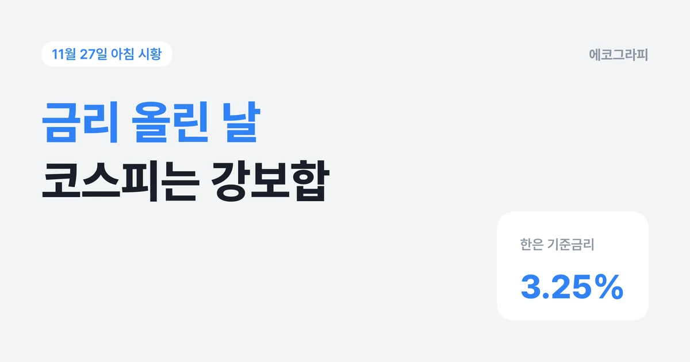
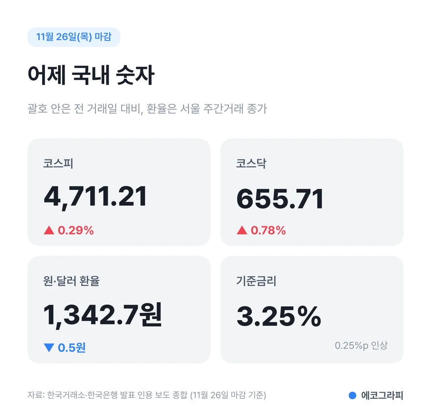
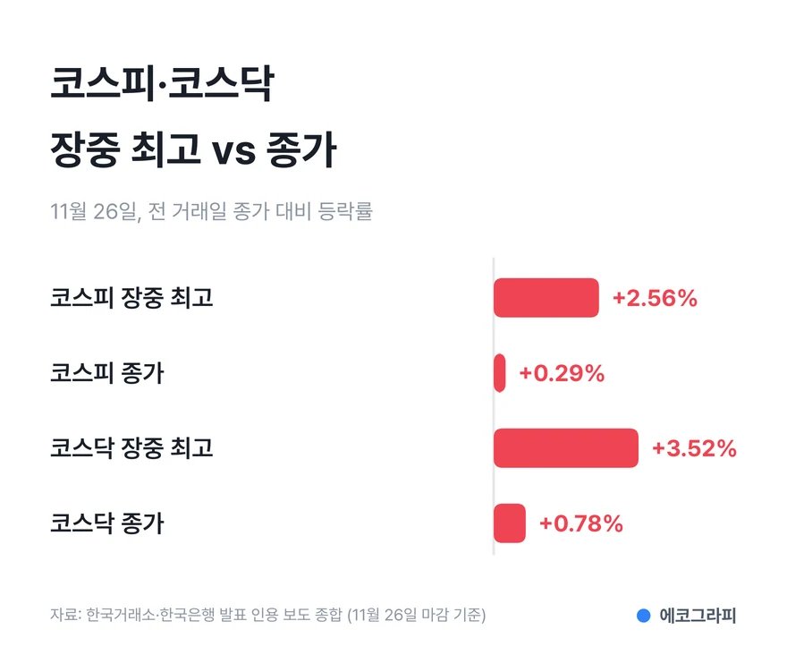
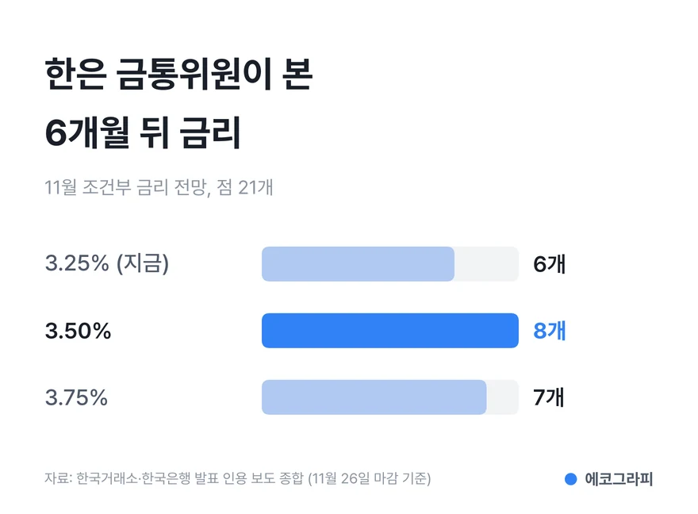
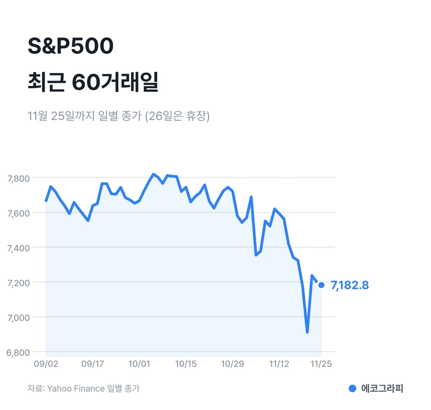
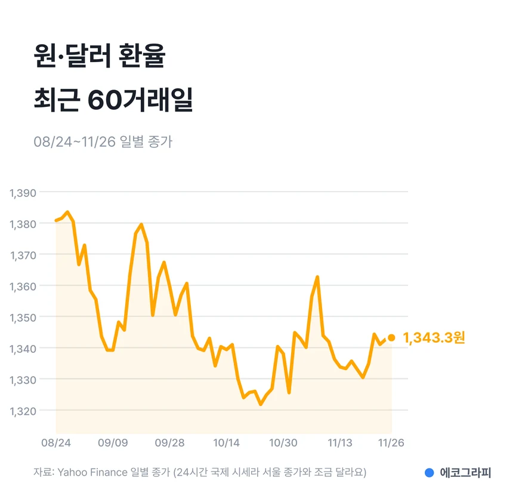
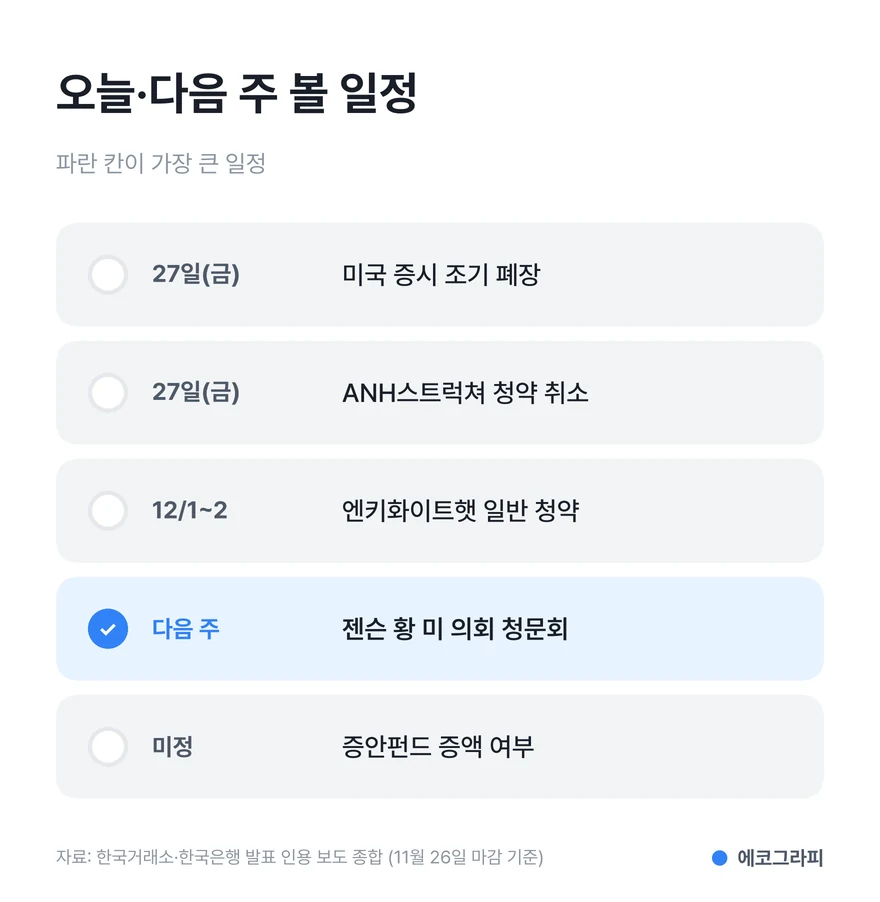

26일(목) 코스피는 13.70포인트(0.29%) 오른 4,711.21로 마감했어요. 하루 전 6.16% 급락(속보 글) 뒤라 장 초반엔 반등이 컸어요. 오전 한때 4,817.77(+2.56%)까지 올랐지만, 금통위가 금리를 올린 뒤 오름폭을 대부분 반납했어요. 코스닥은 5.07포인트(0.78%) 오른 655.71이에요.

코스피에서 기관은 약 7,508억 원을 순매수했고, 외국인은 약 1,137억 원, 개인은 약 1조 438억 원을 순매도했어요. 거래대금은 하루 전보다 30% 넘게 줄었어요. 며칠 동안 하루 5~6%씩 오르내리던 장이 잠시 숨을 고른 모습이에요.

종목별로는 SK하이닉스(+2.23%)와 삼성전자(+0.35%)가 소폭 올랐어요. 반면 현대차(-3.90%)·LG에너지솔루션(-2.11%)은 내렸어요. 미국에서 스페이스X 위성 발사 승인 소식이 나오며 우주항공 관련 테마주가 크게 오른 것도 눈에 띄었어요.
한국은행은 기준금리를 3.25%로 올렸어요. 7월·8월 인상, 10월 동결에 이은 올해 세 번째 인상이에요. 시장이 많이 예상했던 결정이라 '깜짝'은 아니었지만, 앞으로를 보여 주는 조건부 금리 전망(한은판 점도표)이 더 높아졌어요.

금통위원들이 '6개월 뒤 금리'로 찍은 점 21개 가운데 3.50%가 8개, 3.75%가 7개였어요. 8월엔 가장 높은 점이 3.50%였는데 이번엔 3.75%까지 올라왔어요. 가운데 값도 3.25%에서 3.50%로 높아졌어요. 그래서 "한 번 더 올릴 수 있다"는 해석이 많았고, 이게 장 후반 주가를 누른 이유로 꼽혀요. 한국과 미국의 기준금리 차이는 0.75%p로 좁혀졌어요.
오늘 해볼 것: 변동금리 대출이 있다면 은행 앱에서 다음 금리 변경일을 확인해 보세요. 예금은 금리가 오를 때 만기를 짧게 나눠 두면 바뀐 금리를 반영하기 쉬워요.
26일(현지) 뉴욕 증시는 추수감사절로 열리지 않았어요. 마지막 거래일인 25일 S&P500은 7,182.78(-0.25%), 나스닥은 23,585.80(-0.62%), 다우는 50,182.95(+0.33%)였어요. 장중엔 크게 흔들렸다가 낙폭을 줄인 날이었는데, 자세한 흐름은 어제 아침 시황에 있어요.


환율 그래프를 보면 8~9월 1,380원대까지 올랐던 환율이 10월 이후로는 대체로 1,320~1,360원 사이에서 오르내리고 있어요. 한국 금리가 오르면 원화엔 보통 힘이 실리지만, 외국인 배당금 송금처럼 달러가 필요한 수요도 함께 있어서 방향이 뚜렷하진 않아요.

미국 물가 흐름은 PCE 물가 글, 이번 주 큰 일정은 월요일 주간 일정 글에서 볼 수 있어요.
인상은 이미 예상돼 있었고, 하루 전 6% 넘게 빠진 데 따른 반등이 먼저 들어왔어요. 다만 점도표가 '추가 인상'을 시사하자 오름폭이 대부분 줄었어요.
금통위원들이 '몇 달 뒤 금리가 이 정도일 것'이라고 각자 점을 찍어 모은 그림이에요. 약속은 아니지만 앞으로의 방향을 가늠하는 데 많이 써요.
은행마다 달라요. 보통 며칠~몇 주 안에 예금·대출 금리를 조정하니, 새로 가입할 상품은 은행 공지를 확인해 보세요.
회사가 청약 전에 상장을 철회해 청약 자체가 열리지 않아요. 미리 증권사 계좌에 넣어 둔 돈은 그대로 남아 있어요.
※ 2026년 11월 기준으로 정리한 글입니다. 세율·제도는 바뀔 수 있으니 거래 전 증권사·국세청 안내를 한 번 더 확인하세요. 특정 종목·상품의 매수·매도 권유가 아닙니다.